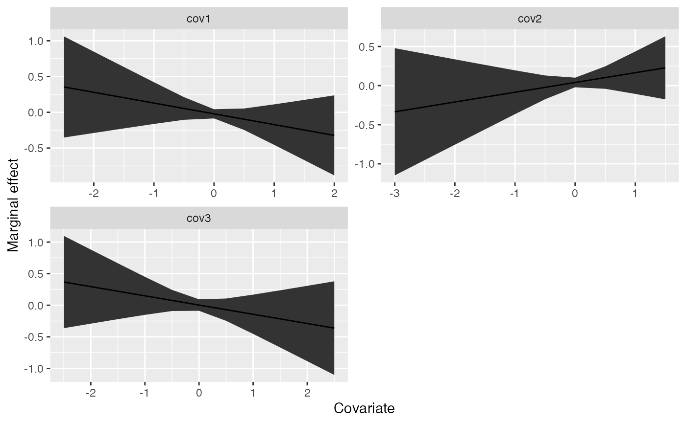

univariate.RmdWe can fit linear regression and generalized additive models using
the univariate() function. Here, we’ll simulate some dummy
data. Our response has 40 time steps, and the matrix of predictors
includes 4 potential covariates.
response <- data.frame(time = 1:40, dev = rnorm(40))
predictors <- matrix(rnorm(4 * 40), ncol = 4)
#' #colnames(predictors) = paste0("X",1:ncol(predictors))
predictors <- as.data.frame(predictors)
predictors$time <- 1:40
lm_example <- univariate_forecast(response,
predictors,
model_type = "lm", # can be 'lm' or 'gam'
n_forecast = 10, # how many years of data to use in testing
n_years_ahead = 1, # how many time steps ahead to forecast
max_vars = 3) # maximum number of covars allowed in any one modelThe returned object is a list with 4 elements
names(lm_example)## [1] "pred" "vars" "coefs" "marginal"These elements are * pred, a dataframe consisting of our original
data, with responses and covariates binded together. Also includes model
predictions est, uncertainty se and several
metrics describing the fit to the training data (train_r2
and train_rmse). * vars, a dataframe containing the
combination of each unique set of covariates included, ranging from 1 to
max_vars * coefs, a list containing coefficients elements
for each model that was fit. For models with n_forecast
larger than 1, a set of coefficients will be returned for each year that
is used as a holdout datapoint. For the above example, we can look
at
lm_example$coefs[[1]]## # A tibble: 30 × 6
## term estimate std.error statistic p.value yr
## <chr> <dbl> <dbl> <dbl> <dbl> <int>
## 1 cov1 0.0590 0.205 0.287 0.776 31
## 2 cov2 -0.244 0.237 -1.03 0.313 31
## 3 cov3 0.00299 0.187 0.0160 0.987 31
## 4 cov1 0.0441 0.209 0.211 0.834 32
## 5 cov2 -0.160 0.234 -0.684 0.500 32
## 6 cov3 -0.0352 0.188 -0.187 0.853 32
## 7 cov1 0.0397 0.202 0.196 0.846 33
## 8 cov2 -0.149 0.214 -0.697 0.491 33
## 9 cov3 -0.0276 0.175 -0.157 0.876 33
## 10 cov1 0.0302 0.193 0.156 0.877 34
## # … with 20 more rowsand see that there are 10 sets of the 3 coefficients, along with
standard errors and p-values for each (yr ranging from 31
to 40).
Using the above example output, we can plot the marginal effects for the first model,
marg <- lm_example$marginal[[1]]
# focus on the marginal effects for the full dataset
marg <- dplyr::filter(marg, year == max(marg$year))
ggplot(marg, aes(x, predicted)) +
geom_ribbon(aes(ymin=conf.low, ymax = conf.high)) +
geom_line() +
facet_wrap(~cov, scale="free", nrow=2) +
ylab("Marginal effect") +
xlab("Covariate")
Using our above dummy dataset, we can also try to use random forest
or lasso / ridge regression methods to generate forecasts. These are
done with the univariate_forecast_ml function.
lm_example <- univariate_forecast_ml(response,
predictors,
model_type = "glmnet", # can be "glmnet" or "randomForest"
n_forecast = 10,
n_years_ahead = 1)The main difference between the parametric or semi-parametric
approaches and the non-parametric ones are that we are not generating
marginal effects. Similarly, the fitted object is slightly different –
this only includes 2 elements, * pred, a dataframe containing the
original data (responses and predictors) along with estimated deviations
* tuning, a dataframe containing the tuning parameters that were
explored for each row (id)